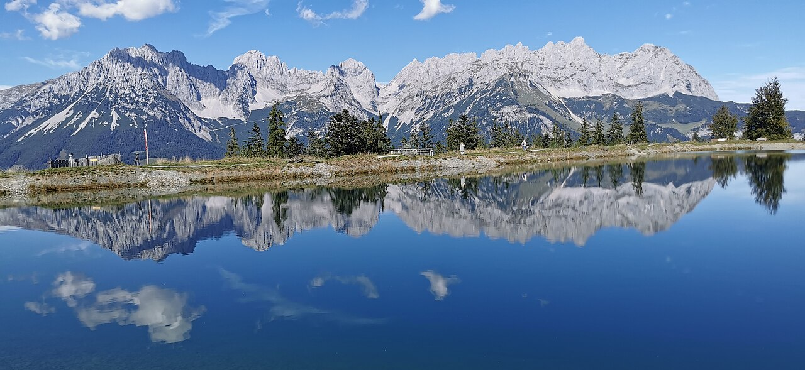
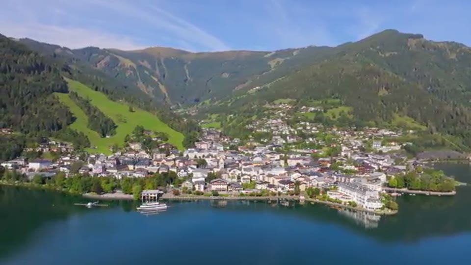
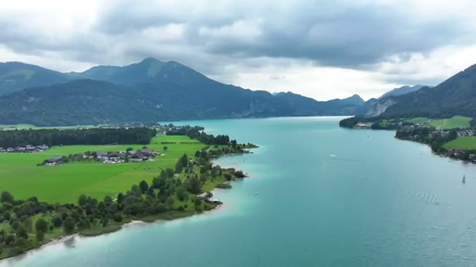
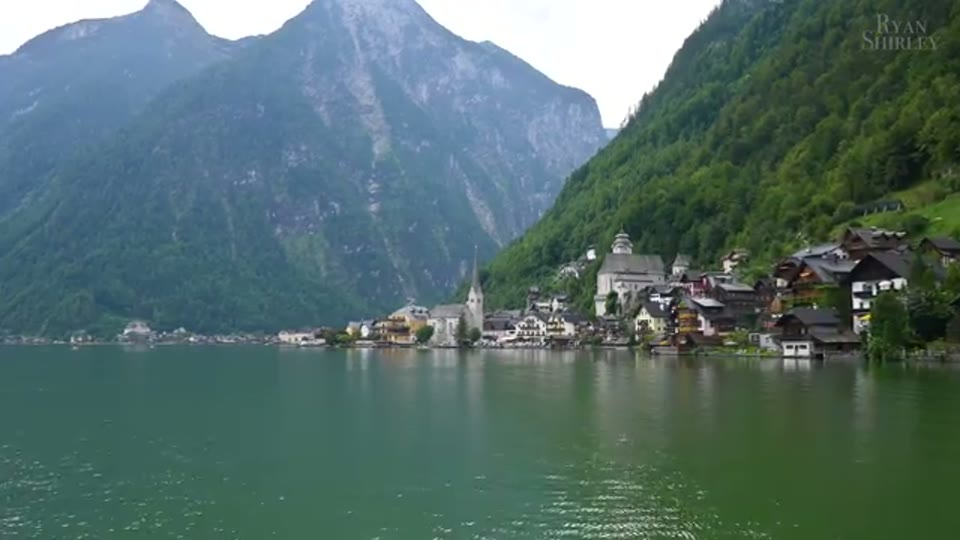

Increasing cloud, but dry enough for a mountain or lake afternoon.
Early showers; brighter breaks are more likely later.
Zell changes that to about 1 hr 31 of total driving.
01 / The answer
What belongs when.
TodaySeptember 13

Best if you can reach the lift by about 2:30
Astbergsee + Pony Alm
Do the close-to-home mountain view while the weather is good. Today is the final daily-operation date of the 2026 high season; the Pony Alm is scheduled until 4 p.m.
- 5–10 min to the Astbergbahn valley station
- Chairlift; bring the baby carrier, not the stroller
- Reflection lake, panoramic ridge and ponies
TomorrowSeptember 14

Best transfer-day addition
Zell am See → Forsthofgut
Let the early showers pass while you pack, then take the southern bend to Zell. The lake is the flexible version; ride Schmittenhöhe only if the summit camera is clear.
- Going → Zell: ~1 hr 06
- Zell → Forsthofgut: ~25 min
- Forsthofgut room guaranteed from 3 p.m.
02 / Geography
See why Zell wins.
Tap a pin for the place, drive times and practical verdict.TodayTomorrowSave for another trip
03 / Video highlights tested
The honest comparison.
Best tomorrow
Zell am See
Lake, compact old town and a mountain backdrop with almost no commitment. It fits the weather because the plan can shrink to a promenade or expand to a cruise or summit.
- From Going
- 1 hr 06
- To Forsthofgut
- 25 min
- Total wheels turning
- 1 hr 31

Best late today
Hintersteiner See
The strongest lake close to the Airbnb. Go for the east-shore view and a short walk; do not force the full loop late in the day with the baby.
- From Going
- 11 min
- To Forsthofgut
- 50 min
- Transfer via lake
- 1 hr 01

Not these two days
Wolfgangsee
A genuine headliner, especially with Schafberg, but it points east while Forsthofgut lies west. Four hours of transfer driving leaves too little time for the lake.
- From Going
- 2 hr 06
- To Forsthofgut
- 2 hr 02
- Total wheels turning
- 4 hr 08

Beautiful, wrong geometry
Hallstatt
The famous frame is real, but tomorrow’s forecast is showery and the route adds more than three hours over the direct transfer before parking and crowds.
- From Going
- 2 hr 17
- To Forsthofgut
- 1 hr 53
- Total wheels turning
- 4 hr 10
04 / Tomorrow's flex menu
Choose by the clouds.
Promenade + old town
Park once, walk the lake edge, cross the compact center and have an early lunch. Easy with the stroller and still feels like a real destination.
Allow 1½–2 hoursPanorama cruise
MS Schmittenhöhe panorama sailings are scheduled hourly from 10 a.m. to 5 p.m. through October 4. Confirm at the pier before committing.
Choose 12:00 or 1:00Schmittenhöhebahn
The main cable car is scheduled 9 a.m.–5 p.m. A fast up-and-back gives the video’s high view, but only choose it if live cameras show something beyond cloud.
Allow at least 2 hoursDrive times are route-planning snapshots without live traffic, calculated September 13. Weather is a dated planning snapshot and should be refreshed before mountain lifts. Video references: Ryan Shirley, Top 25 Places To Visit in Austria.
Watch the Austria video ↗